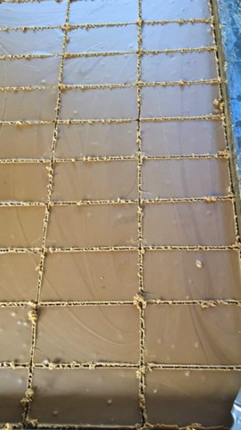
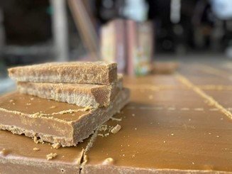

Đường phên
Phục Hòa được xem là “vựa mía” của vùng biên ải phía Bắc của Tổ quốc, với diện tích trồng mía chiếm tới trên 50% diện tích trồng mía của tỉnh Cao Bằng. Ở đây, mỗi năm mía chỉ thu hoạch một vụ. Nhiều nhà trồng làm nguyên liệu cho nhà máy đường Cao Bằng, cũng có người dân Bó Tờ (Thị trấn Hòa Thuận, huyện Phục Hòa) thu mua về làm đường phên.
Những triền núi, thung lũng xanh mướt ở Phục Hòa giờ đã thay bằng màu vàng ươm của những thân cây mía đã róc lá, phơi nắng hanh để bớt nước cho thân cây. Cứ vào khoảng đầu tháng 10 âm lịch là các gia đình bắt đầu chuẩn bị vào mùa thu hoạch. Qua mùa mưa, trời khô dần, gió heo may về làm mía rút bớt nước, có độ ngọt sắc, chất lượng mía đạt tốt nhất, sẽ đảm bảo đường thành phẩm thơm ngon và chất lượng. Khi đó cũng là lúc mọi người chuẩn bị nồi niêu, khuôn đúc để đổ đường phên.
Đến Bó Tờ đúng dịp thu hoạch sẽ thấy một không khí đặc biệt, những con đường làng phơi đầy bã mía, cả làng thơm ngào ngạt mùi mật ngọt. Bà con trong xóm đều dùng bã mía phơi khô để làm nhiên liệu đốt lò nấu đường phên nên có mùi thơm tự nhiên của khói từ mía quyện với hương thơm từ những nồi nấu đường rất đặc trưng.
Qua bao nhiêu năm, so với đời cha ông, giờ người làm mía cũng bớt được nhiều công đoạn thủ công. Chẳng hạn như chặt mía xong đã có xe ô tô, xe công nông chở về tận nhà. Mía róc sạch sẽ cho vào máy ép để lấy hết nước mía thay vì nhờ tới sức người hay lực kéo của trâu bò. Nhưng phần nhiều các công đoạn vẫn cần tới bàn tay con người. Sau khi ép xong, đổ nước mía vào những chiếc chảo gang to để trên bếp lò để đun.
Trong quá trình đun, hầu như lúc nào cũng phải có người túc trực quanh bếp để canh lửa, đảo tay liên tục để nước mía quyện đều và căn độ chín của mật mía. Thường sau khi nước mía sôi sùng sục, người nấu phải hạ bớt lửa để mật sánh dần, nếu lửa to sẽ làm đường cháy đắng. Đến khi mật mía cô lại đặc quánh, nổi lên sắc vàng ươm quanh chảo sẽ đổ ra khuôn. Đây là lúc cần tới đôi mắt và kinh nghiệm của người làm bởi mật phải đảm bảo chín tới mới thơm ngon, sánh quyện. Nếu non quá thì đường sẽ nhanh chảy nước, già quá thì dễ có vị gắt, mùi cháy phảng phất làm mất vị ngon của đường. Mật mía sau khi đổ ra một khuôn to, để khoảng 2 tiếng cho nguội thì sẽ được người làm cắt thành từng miếng nhỏ hơn, thường từ 1 - 2 kg để dễ vận chuyển và bán lẻ cho khách…